HHU summer term 2026
July 22, 2026
Prof. Dr. Jannis Kück
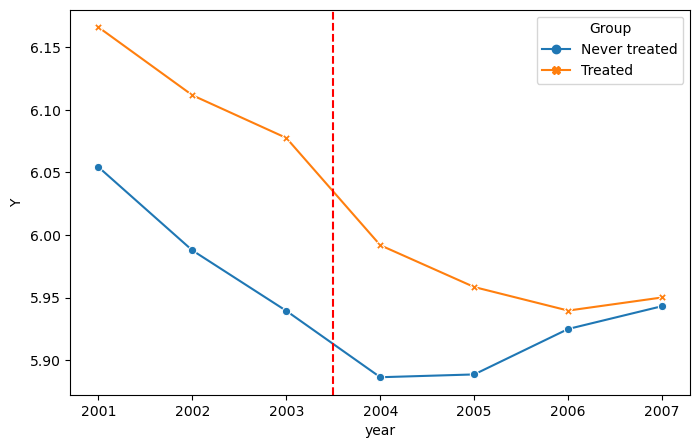
What is the causal effect of a minimum wage increase on youth unemployment?
What is the causal effect of a minimum wage increase on youth unemployment?
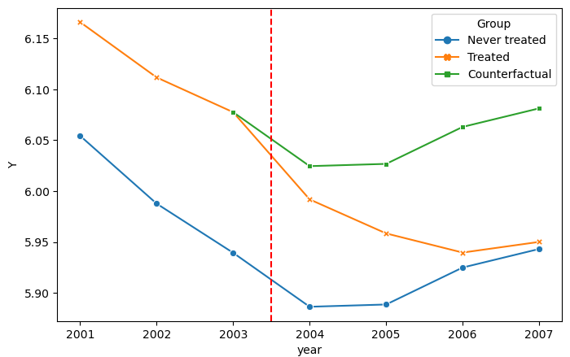
Example:
Business to Business
Example:
Business to Consumer
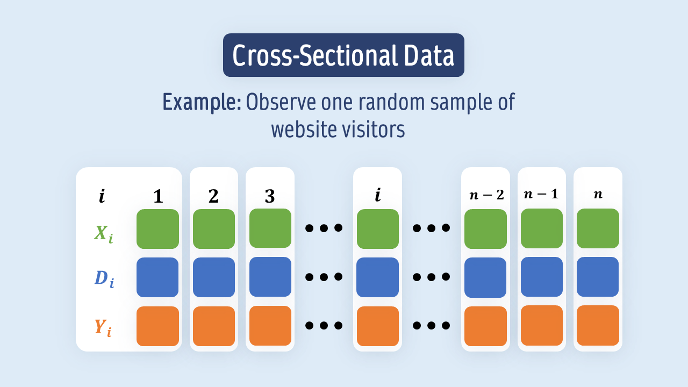
Cross-sectional data
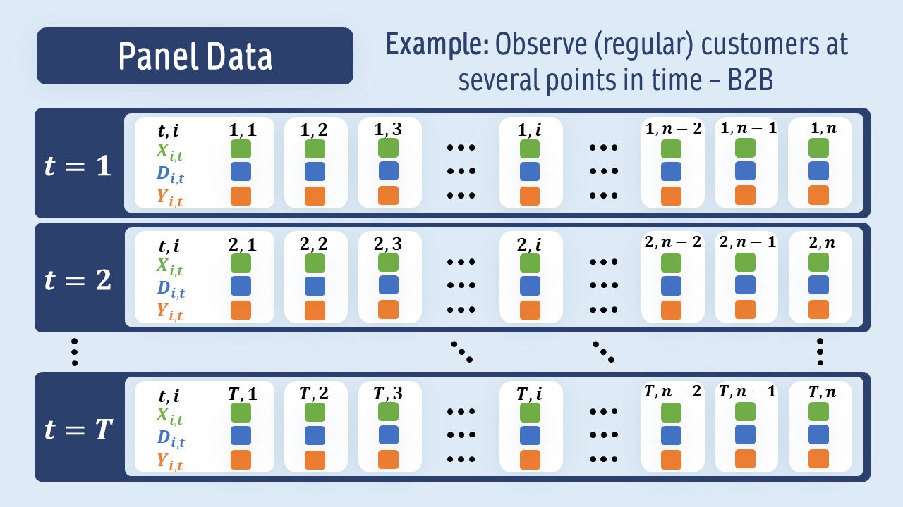
Panel data
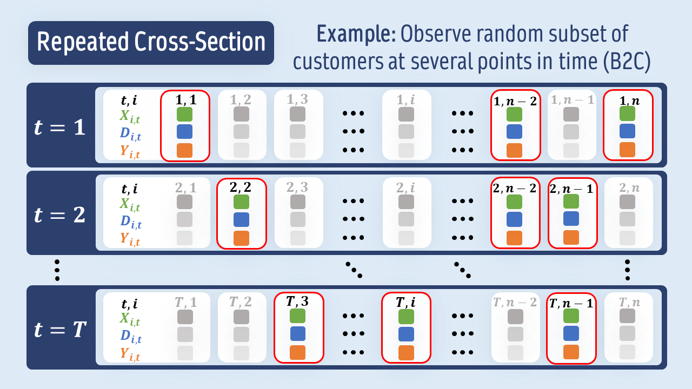
Repeated cross section
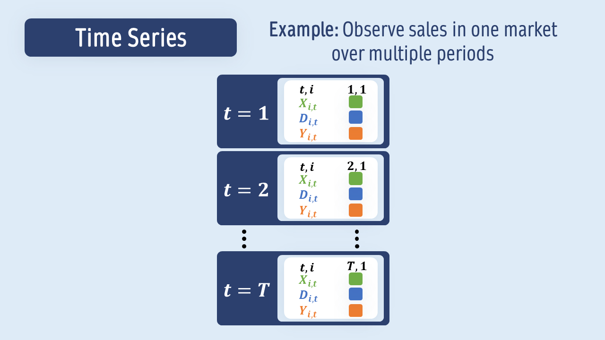
Time series
Two time periods: \(t=0\) pre-treatment and \(t=1\) post-treatment
\(Y_{t}\): Outcome of interest at time \(t\)
\(D_{}\): Treatment indicator if treated between \(t=0\) and \(t=1\) (binary treatment)
\(Y_{t}(0)\): Potential outcome of interest at time \(t\) if not treated up until \(1\)
\(Y_{t}(1)\): Potential outcome of interest at time \(t\) if treated up until \(1\)
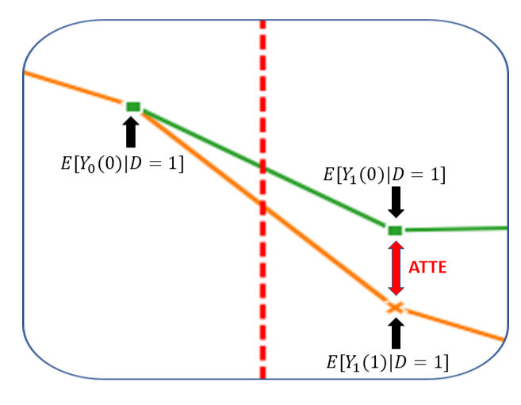
The conterfactuals (green) are not observed
Rely on the group of untreated units (blue) to estimate the counterfactuals
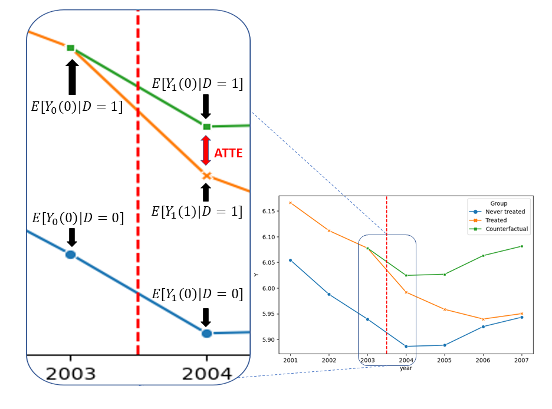
\[ \underbrace{\mathbb{E}[Y_{1}(0)|D=1] - \mathbb{E}[Y_{0}(0)|D=1] }_{=\Delta_{D=1}(0)}= \underbrace{\mathbb{E}[Y_{1}(0)|D=0] - \mathbb{E}[Y_{0}(0)|D=0]}_{=\Delta_{D=0}(0)} \]
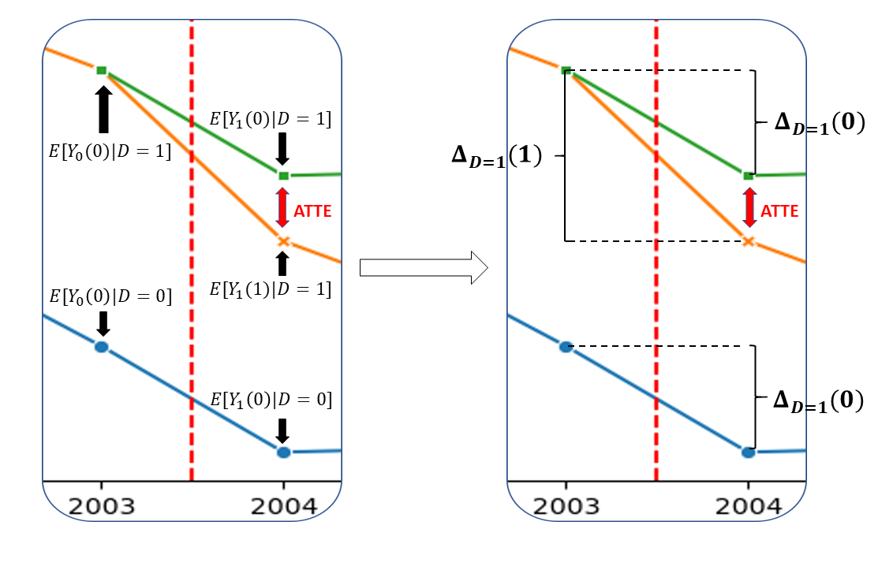
The parameter of interest is the average treatment effect on the treated (ATTE): \[ \theta_0:=\mathbb{E}[Y_{1}(1) - Y_{1}(0)| D=1] \]
If the parallel trends assumptions is satisfied, the ATTE can be identified by
\[ \begin{align*} \theta_0: &= \underbrace{\Delta_{D=1}(1)}_{\text{Difference in treated}} - \underbrace{\Delta_{D=0}(0)}_{\text{Difference in untreated}} \end{align*} \]
The parallel trend assumption might be very hard to justify
Usually there are some previous conditions which influence the trend of the outcome (e.g. economic growth, population, etc.)
\[ \mathbb{E}[Y_{1}(0) - Y_{0}(0)|X, D=1] = \mathbb{E}[Y_{1}(0) - Y_{0}(0)|X, D=0] \]
\[ \mathbb{E}[Y_{1}(0) - Y_{0}(0)|X, D=1] = \mathbb{E}[Y_{1}(0) - Y_{0}(0)|X, D=0] \]
\[ \mathbb{E}[Y_{0}(0)|X, D=1] = \mathbb{E}[Y_{0}(1)|X, D=1] \]
\[ \exists\epsilon > 0: P(D=1|X) > \epsilon \text{ and } P(D=1|X) \le 1-\epsilon \]
So far, we considered a setting with 2 periods
It’s possible to extend the idea to settings with multiple periods, see for example Callaway and Sant’Anna (2021)
Moreover, it is possible to use sensitivity analysis as of Chernozhukov et al. (2022) for Difference-in-Differences
Overview on Difference-in-Differences models: Chapter 7 of Huber (2023), Chapter 15 in Chernozhukov et al. (forthcoming), Callaway (2022) and Roth et al. (2023) for more recent developments
Observations are iid. of the form \(W=(Y_{0}, Y_{1}, D, X)\)
Score implemented as proposed in Chang (2020), Sant’Anna and Zhao (2020) and Zimmert (2018) \[ \psi(W,\theta,\eta) = -\frac{D}{p}\theta + \frac{D - m(X)}{p(1-m(X))}(Y_{1} - Y_{0}- g(0,X)) \] with \(\eta=(g, m, p)\).
Nuisance components \[ \begin{align*} p_0 &= \mathbb{E}[D]\\ m_0(X) &= P(D=1|X)\\ g_0(0,X) &= \mathbb{E}[Y_{1} - Y_{0}|D=0, X] \end{align*} \]
| year | Groups | Y | lpop | lavg_pay | id | D | region_2 | region_3 | region_4 | |
|---|---|---|---|---|---|---|---|---|---|---|
| 2 | 2003 | Never treated | 5.111988 | 9.790095 | 10.382265 | 13001 | 0 | 0 | 1 | 0 |
| 3 | 2004 | Never treated | 5.308268 | 9.792891 | 10.424986 | 13001 | 0 | 0 | 1 | 0 |
| 9 | 2003 | Never treated | 3.401197 | 8.983314 | 10.053802 | 13003 | 0 | 0 | 1 | 0 |
DoubleMLDIDData is constructed for a univariate outcome y \(\Rightarrow\) Use \(\Delta Y_{} = Y_{1} - Y_{0}\)
Choose features as pre-treatment covariates
| id | lpop | lavg_pay | region_2 | region_3 | region_4 | D | Y | |
|---|---|---|---|---|---|---|---|---|
| 0 | 13001 | 9.790095 | 10.382265 | 0 | 1 | 0 | 0 | 0.196280 |
| 1 | 13003 | 8.983314 | 10.053802 | 0 | 1 | 0 | 0 | 0.154151 |
| 2 | 13005 | 9.237274 | 10.059679 | 0 | 1 | 0 | 0 | 0.054559 |
| 3 | 13007 | 8.364042 | 10.085684 | 0 | 1 | 0 | 0 | -0.262364 |
| 4 | 13009 | 10.716150 | 10.168042 | 0 | 1 | 0 | 0 | -0.175585 |
DoubleMLDIDData objectfrom doubleml import DoubleMLDIDData
dml_data = DoubleMLDIDData(df_diff, y_col="Y", d_cols="D",
x_cols=["lpop", "lavg_pay", "region_2", "region_3", "region_4"])
print(dml_data)================== DoubleMLDIDData Object ==================
Time variable: None
Outcome variable: Y
Treatment variable(s): ['D']
Covariates: ['lpop', 'lavg_pay', 'region_2', 'region_3', 'region_4']
Instrument variable(s): None
No. Observations: 1519
DoubleMLDID classfit() methodfrom doubleml import DoubleMLDID
from sklearn.ensemble import RandomForestRegressor, RandomForestClassifier
from sklearn.base import clone
ml_g = RandomForestRegressor()
ml_m = RandomForestClassifier()
dml_did = DoubleMLDID(dml_data,
ml_g=clone(ml_g),
ml_m=clone(ml_m))
dml_did.fit()
print(dml_did.summary) coef std err t P>|t| 2.5 % 97.5 %
D -0.033636 0.020753 -1.620774 0.105066 -0.074311 0.007039ml_m is only relevant for score=observationalfrom doubleml import DoubleMLDID
from lightgbm import LGBMClassifier, LGBMRegressor
dml_did = DoubleMLDID(dml_data,
ml_g,
ml_m=None,
n_folds=5,
n_rep=1,
score='observational',
in_sample_normalization=True,
dml_procedure='dml2',
trimming_rule='truncate',
trimming_threshold=0.01,
draw_sample_splitting=True,
apply_cross_fitting=True)The crucial assumption for the identification of the ATTE is the conditional parallel trends assumption
Pre-testing is a common approach to check the validity of the conditional parallel trends assumption
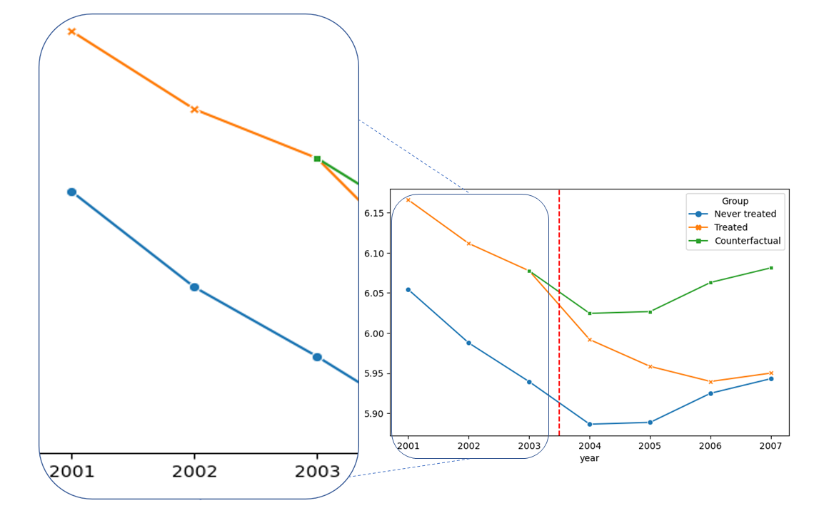
| year | Groups | Y | lpop | lavg_pay | id | D | region_2 | region_3 | region_4 | |
|---|---|---|---|---|---|---|---|---|---|---|
| 0 | 2001 | Never treated | 5.293305 | 9.771840 | 10.322329 | 13001 | 0 | 0 | 1 | 0 |
| 1 | 2002 | Never treated | 5.170484 | 9.777981 | 10.350063 | 13001 | 0 | 0 | 1 | 0 |
| 2 | 2003 | Never treated | 5.111988 | 9.790095 | 10.382265 | 13001 | 0 | 0 | 1 | 0 |
| 7 | 2001 | Never treated | 4.204693 | 8.934587 | 9.980124 | 13003 | 0 | 0 | 1 | 0 |
years = [2002, 2003, 2004]
df_pretest = pd.DataFrame({'year': years, 'effect': np.nan, 'lower': np.nan, 'upper': np.nan})
for t_idx, t in enumerate([2001, 2002, 2004]):
df = df_subset.loc[(df_subset.year == t) | (df_subset.year==2003)].copy()
df_diff = df.groupby("id").agg({"lpop": "first", "lavg_pay": "first",
"region_2": "first", "region_3": "first",
"region_4": "first", "D": "first",
"Y": compute_difference}).reset_index()
dml_data = DoubleMLDIDData(df_diff, y_col="Y", d_cols="D",
x_cols=["lpop", "lavg_pay", "region_2", "region_3", "region_4"])
dml_did = DoubleMLDID(dml_data,
ml_g=clone(ml_g),
ml_m=clone(ml_m))
dml_did.fit()
df_pretest.loc[t_idx, 'effect'] = dml_did.coef
df_pretest.loc[t_idx, 'lower'] = dml_did.confint()['2.5 %'].iloc[0]
df_pretest.loc[t_idx, 'upper'] = dml_did.confint()['97.5 %'].iloc[0]import matplotlib.pyplot as plt
fig, ax = plt.subplots()
errors = np.full((2, df_pretest.shape[0]), np.nan)
errors[0, :] = df_pretest['effect'] - df_pretest['lower']
errors[1, :] = df_pretest['upper'] - df_pretest['effect']
plt.errorbar(df_pretest['year'], df_pretest['effect'], fmt='o', yerr=errors, color='#1F77B4',
ecolor='#1F77B4', label='Estimated Effect (with CI)')
ax.plot(df_pretest['year'], df_pretest['effect'], linestyle='--', color='#1F77B4', linewidth=1)
ax.axhline(y=0, color='black', linestyle='--', linewidth=1)
ax.axvline(x=2003.5, color='red', linestyle='dashed')
plt.xlabel('Year')
plt.xticks(range(2002, 2005))
plt.legend()
_ = plt.ylabel('Effect and 95%-CI')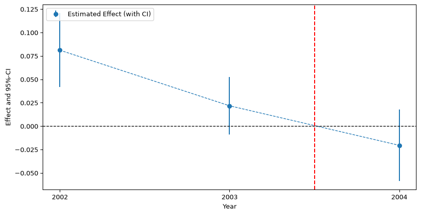
| year | Groups | Y | lpop | lavg_pay | id | D | region_2 | region_3 | region_4 | |
|---|---|---|---|---|---|---|---|---|---|---|
| 0 | 2001 | Never treated | 5.293305 | 9.771840 | 10.322329 | 13001 | 0 | 0 | 1 | 0 |
| 1 | 2002 | Never treated | 5.170484 | 9.777981 | 10.350063 | 13001 | 0 | 0 | 1 | 0 |
| 2 | 2003 | Never treated | 5.111988 | 9.790095 | 10.382265 | 13001 | 0 | 0 | 1 | 0 |
| 3 | 2004 | Never treated | 5.308268 | 9.792891 | 10.424986 | 13001 | 0 | 0 | 1 | 0 |
years = [2005, 2006, 2007]
df_multiple_periods = pd.DataFrame({'year': years, 'effect': np.nan, 'lower': np.nan, 'upper': np.nan})
for t_idx, t in enumerate(years):
df = df_subset.loc[(df_subset.year == 2003) | (df_subset.year==t)].copy()
df_diff = df.groupby("id").agg({"lpop": "first",
"lavg_pay": "first",
"region_2": "first",
"region_3": "first",
"region_4": "first",
"D": "last",
"Y": compute_difference}).reset_index()
dml_data = DoubleMLDIDData(df_diff, y_col="Y", d_cols="D",
x_cols=["lpop", "lavg_pay", "region_2", "region_3", "region_4"])
dml_did = DoubleMLDID(dml_data,
ml_g=clone(ml_g),
ml_m=clone(ml_m))
dml_did.fit()
df_multiple_periods.loc[t_idx, 'effect'] = dml_did.coef
confint = dml_did.confint(level=0.95)
df_multiple_periods.loc[t_idx, 'lower'] = confint['2.5 %'].iloc[0]
df_multiple_periods.loc[t_idx, 'upper'] = confint['97.5 %'].iloc[0]
df_multiple_periods| year | effect | lower | upper | |
|---|---|---|---|---|
| 0 | 2005 | -0.041293 | -0.083163 | 0.000577 |
| 1 | 2006 | -0.083440 | -0.128205 | -0.038676 |
| 2 | 2007 | -0.096804 | -0.153637 | -0.039971 |
df_did = pd.concat([df_pretest, df_multiple_periods], axis=0)
fig, ax = plt.subplots()
errors = np.full((2, df_did.shape[0]), np.nan)
errors[0, :] = df_did['effect'] - df_did['lower']
errors[1, :] = df_did['upper'] - df_did['effect']
plt.errorbar(df_did['year'], df_did['effect'], fmt='o', yerr=errors, color='#1F77B4',
ecolor='#1F77B4', label='Estimated Effect (with CI)')
ax.plot(df_did['year'], df_did['effect'], linestyle='--', color='#1F77B4', linewidth=1)
ax.axhline(y=0, color='black', linestyle='--', linewidth=1)
ax.axvline(x=2003.5, color='red', linestyle='dashed')
plt.xlabel('Year')
plt.legend()
_ = plt.ylabel('Effect and 95%-CI')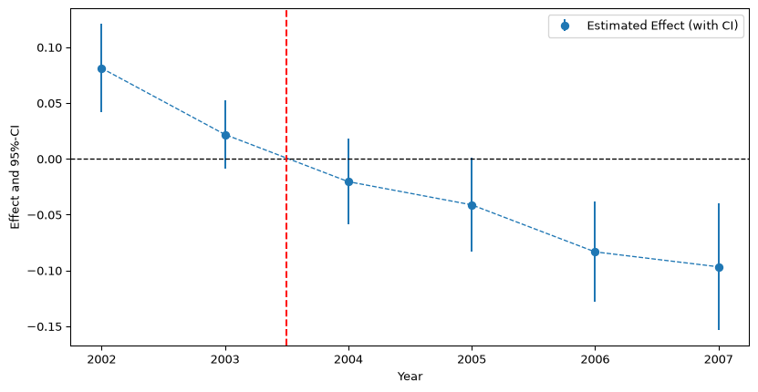
CML